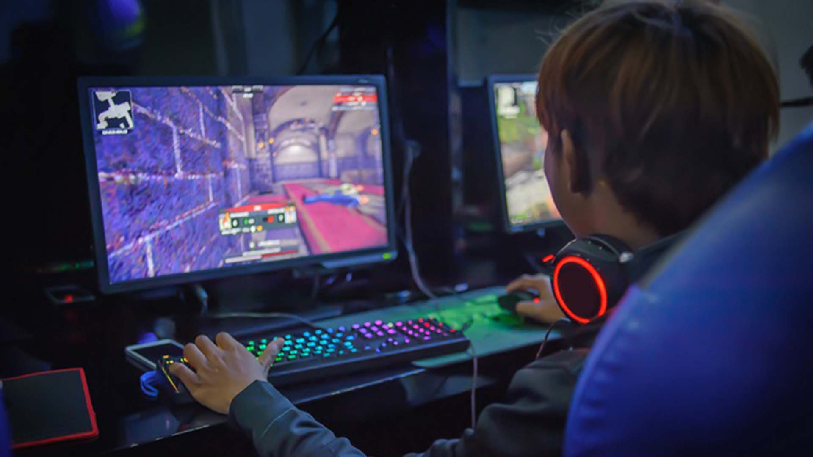
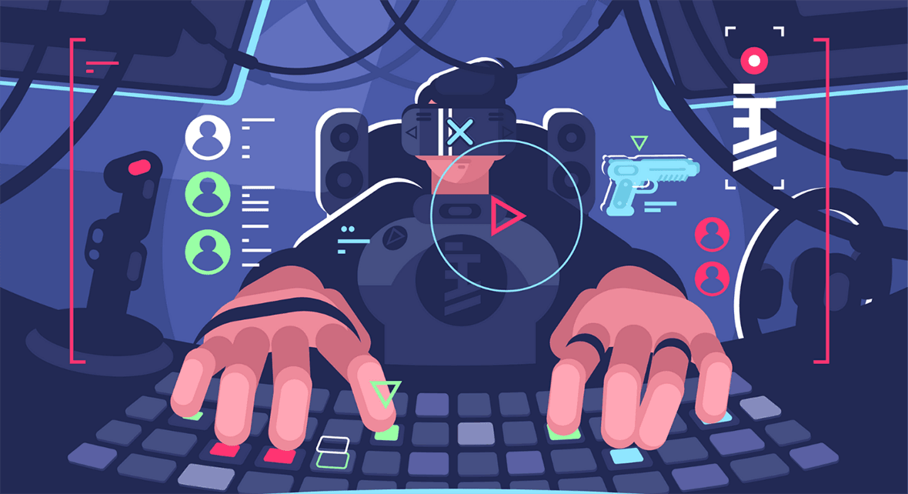

Essa é uma carreira inovadora que mistura criatividade e programação. Quem segue nela pode se especializar em jogos para computador, celular e até inteligência artificial. Modele personagens, crie regras e faça design de cenários e animações. Aprenda ferramentas para criar em ambientes diversos, de 2D à realidade aumentada, e colabore com empresas de educação, marketing, entretenimento e muito mais. Essa é uma carreira inovadora que mistura criatividade e programação. Quem segue nela pode se especializar em jogos para computador, celular e até inteligência artificial. Modele personagens, crie regras e faça design de cenários e animações. Aprenda ferramentas para criar em ambientes diversos, de 2D à realidade aumentada, e colabore com empresas de educação, marketing, entretenimento e muito mais.
O curso de Jogos Digitais forma profissionais para o desenvolvimento de jogos para as mais diversas plataformas digitais. Após a conclusão do curso, o aluno está apto a desenvolver todas as etapas que constituem um jogo, como roteiro, descrição dos personagens, modelagem, criação do ambiente digital, estratégias e toda a finalização. O superior em Jogos Digitais é um curso tecnólogo e por isso pode ser concluído em dois ou três anos, de forma mais rápida que outros cursos de graduação. No mercado de trabalho, o profissional de Jogos Digitais poderá atuar como autônomo, produzindo seus próprios projetos, ou em empresas de desenvolvimento de jogos. Pode ainda atuar em outras áreas, como em empresas de publicidade e no desenvolvimento de sites e aplicativos. Os tipos de formação para o curso de Jogos Digitais são: bacharelado, tecnólogo, pós-graduação e técnico.


O bacharel em Jogos Digitais atua no segmento de interatividade digital, para o entretenimento ou não, projeta e desenvolve produtos como jogos educacionais, jogos publicitários, e jogos comerciais como: Infinite runner, bullet hell, aventura, ação, RPG, FPS, estratégia, simulação, assim como outros gêneros, para diferentes dispositivos, tais como celulares, tablets, computadores pessoais, web e consoles. Lida com plataformas, ferramentas e tecnologias, adotadas no mercado de trabalho e pelas empresas parceiras, para a criação de jogos digitais. Trabalha no desenvolvimento e na gestão de projetos de sistemas de entretenimento digital interativo – em rede ou isoladamente – de roteiros e modelagem de personagens virtuais e na interação com base de dados, pesquisam e produzem artefatos de estudo para áreas de jogos educativos, simuladores e entretenimento, ludificam processo de treinamento, procedimentos mercadológicos e ações de publicidades e marketing. Os alunos possuem suporte dos professores, dos monitores de disciplinas e a infraestrutura que a PUC Minas oferece. Certificações intermediárias são fornecidas aos alunos que concluem os módulos de arte e de programação.